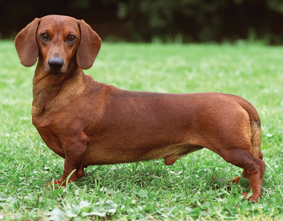
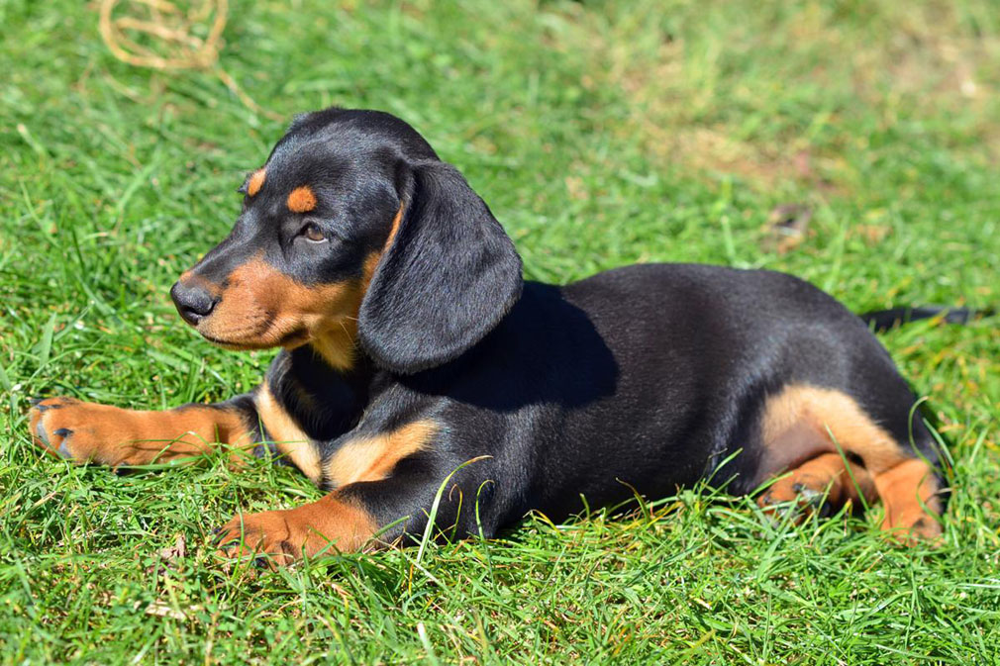
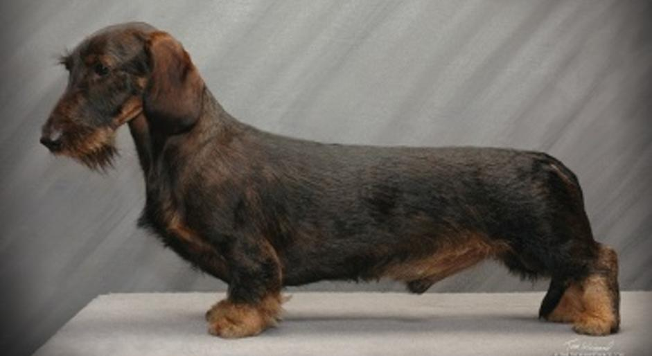
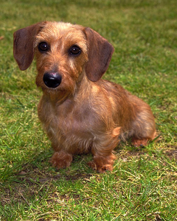
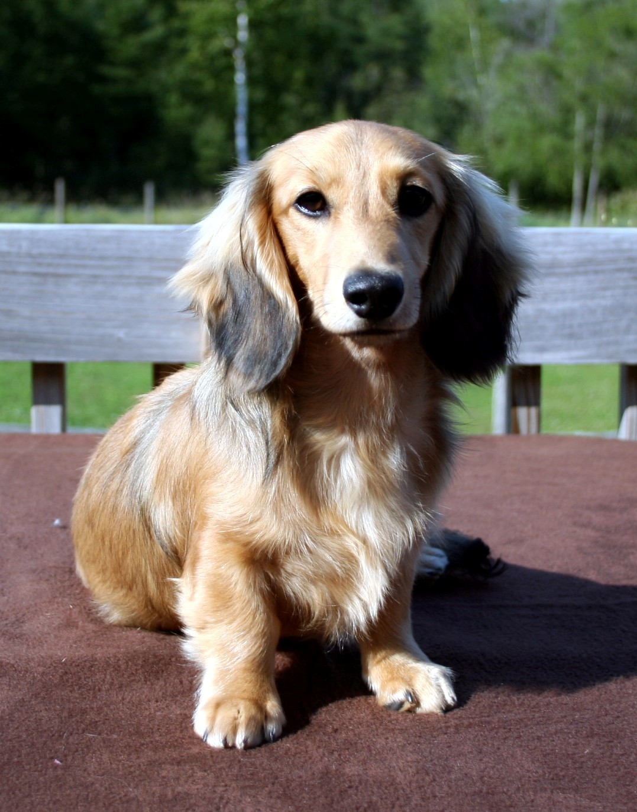

This webpage is all about the wiener dog, or the dachshund. These dogs originated in Germany and are members of the hound family. They were originally used for scent-recognition and for hunting small animals, but now, they are one the most popular dog breed in America. They are fun loving dogs who love attention from their humans, but also have a tendency to be stubborn, hard to train, and overly aggressive when they feel threatened...but thats what makes them great dogs! These dogs are not only notable for their big personalities, but also for their characteristic short little legs and long bodies. Most wiener dogs are a solid red color, but it is also possible to see black, chocolate brown, white, and many different combinations and patterns of these colors. There are two different sizes of wiener dog, the standard and the miniature, and three different coat types: smooth, wirehaired, and longhaired. The standard wiener dog is about 16-32 pounds and the miniature weighs 11 pounds and under. Lets explore some of these options!
| Size/Coat | Example | Image Source |
|---|---|---|
| Standard Size with a Smooth Coat |  | Source |
| Miniature Size with a Smooth Coat |  | Source |
| Standard Size with a Wirehaired Coat |  | Source |
| Miniature Size with a Wirehaired Coat |  | Source |
| Standard Size with a Longhaired Coat | |
Source |
| Miniature Size with a Longhaired Coat |  | Source |
Just as with any breed of dog, it is important that you take extra good care of you dachshund puppy. They can be very hard to house train: they do not take well to instruction and learning and feel the need mark their territory, often indoors. They are very small so it is important that you watch your step and make sure there are no spaces in which they get could get stuck without rescue. It is important that you show them lots of love very early because they are very sensitive dogs! Take them on lots of walks to exercise their little legs as well. If you do the puppy stage right, you should have little issues when your dog is an adult! But also enjoy your puppy while they are very small and cute
Here is a video on training a dachshund puppy!Thank you for reading this page and I hope it helped you learn more about these adorable dogs!